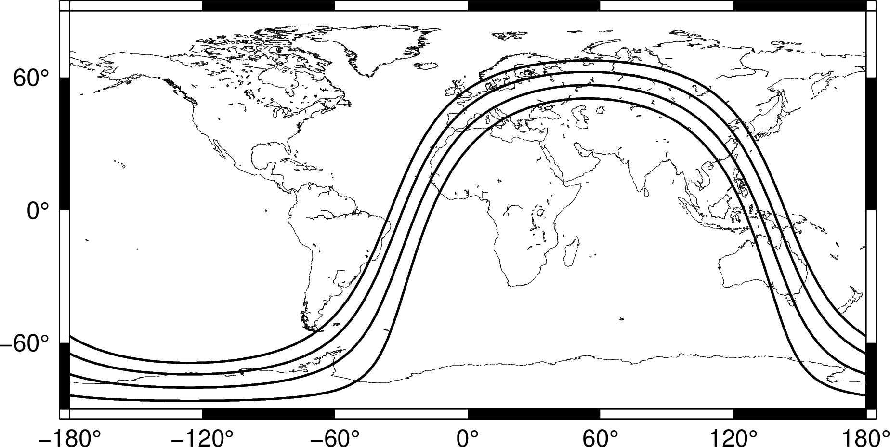

solar¶
| 官方文件: | solar |
|---|---|
| 簡介: | 計算或/和繪製晨昏線以及民用、航海用以及天文用曙暮光區域 |
語法¶
gmt solar [ -Bparameters ] [ -C ] [ -G[fill] ] [ -I[lon/lat][+ddate][+zTZ] ] [ -Jparameters ] [ -M ] [ -N ] [ -Rregion ] [ -Tdcna[+ddate][+zTZ]] [ -U[stamp] ] [ -V[level] ] [ -Wpen ] [ -X[a|c|f|r][xshift[u]] ] [ -Y[a|c|f|r][xshift[u]] ] [ -bobinary ] [ -hheaders ] [ -oflags ] [ -pflags ] [ -ttransp ] [ --PAR=value ]
必選選項¶
-I 和 -T 必須使用一個。
可選選項¶
- -Bparameters (more …)
- 设置底图边框和轴属性
- -C
在一行內格式化打印（以Tab鍵分隔）-I 選項輸出的信息。輸出內容包括：
- 太陽的經度、緯度、方位角、高度角，單位爲度
- 日出、日落、正午的時間，單位爲天
- 日長，單位爲分鐘
- 考慮折射效應矯正後的太陽高度較正以及均時差，單位爲分鐘
注解
若沒有通過 -Ilon/lat 提供經緯度，則太陽高度角之後的數據均以 (0,0) 作爲參考點。
示例:
$ gmt solar -I120/40+d2016-11-01T01:00:00+z8 -C 160.885755836 -14.5068940782 38.6719503593 -59.513608404 0.270214374769 0.706928713211 0.48857154399 628.868647356 -59.5102114599 16.4569766548
- -I[lon/lat][+ddate][+zTZ]
輸出太陽的當前位置、方位角和高度角。加上 lon/lat 則輸出日出、日落、正午時間以及一天時間長度。用 +ddata 指定ISO格式的日期時間（比如 +d2000-04-25T10:00:00 ）來計算特定時刻的太陽參數。如果有需要，也可以通過 +zTZ 加上時區。
$ gmt solar -I120/40+d2016-11-01T01:00:00+z8 Sun current position: long = 160.885756 lat = -14.506894 Azimuth = 38.6720 Elevation = -59.5136 Sunrise = 06:29 Sunset = 16:58 Noon = 11:44 Duration = 10:29
- -Jprojection (more …)
- 设置地图投影方式。
- -M
- 將晨昏線數據以多段ASCII表格式寫到標準輸出（或二進制格式，見 -b 選項）。使用該選項，則只輸出數據不繪圖。
- -N
- 反轉晨昏線“內”和“外”概念顛倒。僅可與 -Gc 一起使用以剪裁出白晝區，不可與 -B 一同使用。
- -Rxmin/xmax/ymin/ymax[+r][+uunit] (more …)
- 指定数据范围
- -Tdcna[+ddate][+zTZ]
繪製一個或多個不同定義的晨昏線。若需要導出晨昏線數據，見 -M 選項。
通過添加 dcna 來繪製一個或多個不同定義的晨昏線。其中，
- d 指晨昏線
- c 指民用曙暮光
- n 指航海曙暮光
- a 指天文曙暮光
+ddate 爲ISO格式的日期時間（例如 +d2000-04-25T12:15:00），以得到該時刻晨昏交替的位置。也可以通過 +zTZ 加上時區。
不同曙暮光區的定義如下圖所示：

曙暮光區的多種定義（圖片來自於 https://en.wikipedia.org/wiki/Twilight）
- 民用曙暮光分爲晨間曙光區和晚間暮光區：
- 晨間曙光區是指太陽的幾何中心位於地平線以下6˚至地平線以下0˚50’（或日出，即太陽上邊緣接觸地平線）這段時間
- 晚間曙光區是指太陽的幾何中心位於地平線以下 0˚50’（或日落，即太陽下邊緣接觸地平線）至地平線以下6˚ 這段時間
- 航海曙暮光指太陽中心位於地平線以下 0˚50’ 至 12˚ 這段時間
- 天文曙暮光指太陽中心位於地平線以下 0˚50’ 至 18˚ 這段時間
下面的命令繪製了晨昏線以及三條曙暮光線:
gmt begin terminator png gmt coast -Rd -W0.1p -JQ0/14c -Ba -BWSen -Dl -A1000 gmt solar -W1p -Tdcna gmt end
晨昏線和曙暮光線
{kind=link}
- -U[label][+c][+jjust][+odx/dy] (more …)
- 在图上绘制GMT时间戳logo
- -V[level] (more …)
- 设置 verbose 等级 [c]
- -W[pen]
- 設置晨昏線的畫筆屬性，見 畫筆。
-X[a|c|f|r][xshift[u]]
- -Y[a|c|f|r][yshift[u]] (more …)
- 移动绘图原点
- -bo[ncols][type] (more …)
- 设置二进制输出的数据格式
- -ocols[,…][,t[word]] (more …)
- 设置输出数据列（0表示第一列，t 表示文本列）
- -p[x|y|z]azim[/elev[/zlevel]][+wlon0/lat0[/z0]][+vx0/y0] (more …)
- 设置3D透视视角
- -t[transp] (more …)
- 设置图层透明度（百分比）。取值范围为0（不透明）到100（全透明）
示例¶
gmt begin solar png
gmt coast -Rd -JKs0/10i -Dl -A5000 -W0.5p -N1/0.5p,gray -S175/210/255 -Bafg --MAP_FRAME_TYPE=plain
gmt solar -Td+d2016-02-09T16:00:00 -Gnavy@95
gmt solar -Tc+d2016-02-09T16:00:00 -Gnavy@85
gmt solar -Tn+d2016-02-09T16:00:00 -Gnavy@80
gmt solar -Ta+d2016-02-09T16:00:00 -Gnavy@80
gmt solar -I+d2016-02-09T16:00:00 -C | gmt plot -Sksunglasses/1.5c -Gyellow
gmt end
{kind=link}